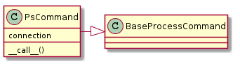
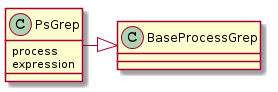

This implements a ps command caller, PsCommand and a parser for the output, PsGrep.
PsCommand |

- None
- Sends
pscommand to a connection to a device- Checks for error-messages specific to the
pscommand.- Generates output from the
pscommand
- Connection
Example Use:
connection = SSHConnection(hostname='elin', username='tester')
ps = PsCommand(connection)
for line in ps():
print line
The errors have been tested on an Ubuntu system, a Nexus 7, and a Motorola Triumph.
PsGrep |

- None
- Calls the PsCommand and traverses its output
- Extracts fields from lines that match the indicated process-names
- Yields all extracted fields
- PsCommand
Example Use:
connection = SSHConnection(hostname='elin', username='tester',
operating_system=OperatingSystem.ios)
grep = PsGrep(connection, 'iperf')
for pid in grep():
print pid
Note
Since the PsGrep is implemented in this case to directly use the PsCommand it acts as a Builder for it, making the collaboration with the PsCommand somewhat obscure.
The advantage in having this relationship is that you can change the PsCommand by changing the PsGrep connection:
connection_1 = SSHConnection(hostname='elin', username='tester',
operating_system=OperatingSystem.android)
connection_2 = SSHConnection(hostname='bob', username='tester',
Operating_system=OperatingSystem.linux)
grep = PsGrep(connection)
for pid in grep('iperf'):
print pid
grep.connection = connection_2
for pid in grep('iperf'):
print pid
TestPs.test_constructor |
|
TestPs.test_wrong_command |
|
TestPs.test_wrong_command_nexus |
|
TestPs.test_bad_argument |
|
TestPs.test_bad_argument_android |
|
TestPs.test_standard_error |
|
TestPs.test_no_processes_found |
TestPsGrep.test_constructor |
|
TestPsGrep.test_call |
|
TestPsGrep.test_expression |
|
TestPsGrep.test_unmatched |
|
TestPsGrep.test_call_parameter |